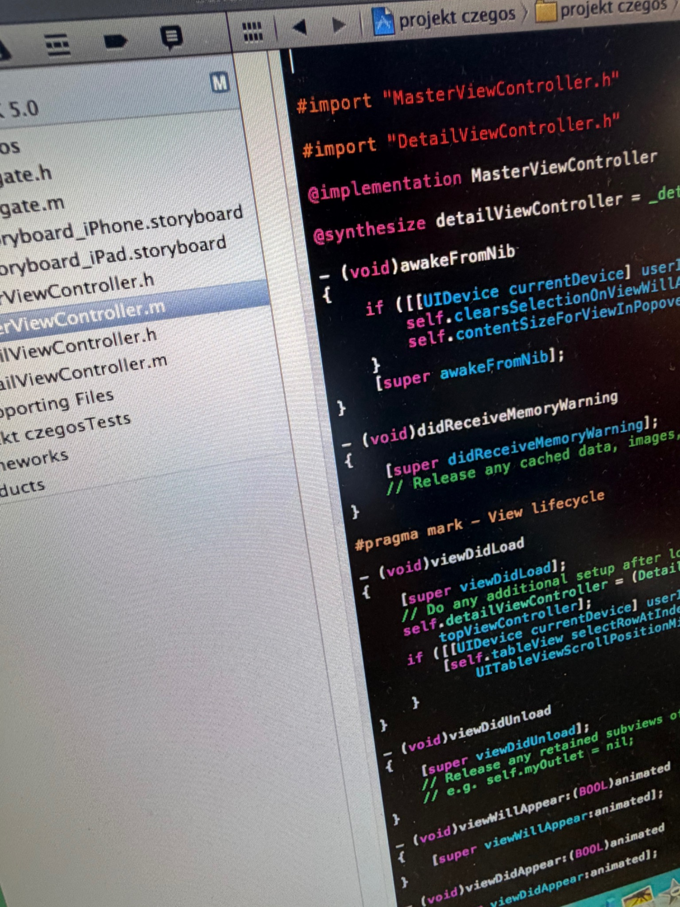

C++
wydajne programowanie, systemy, eksperymenty niskopoziomowe
Mój zestaw narzędzi — od kodu niskopoziomowego po aplikacje i administrację systemami.

wydajne programowanie, systemy, eksperymenty niskopoziomowe
aplikacje Apple, nowoczesny kod i praca z ekosystemem macOS/iOS
modelowanie danych, zapytania, relacje i codzienna praca z bazami
terminal, administracja, sieci, usługi, automatyzacja i Arch Linux
grafika i obliczenia GPU w ekosystemie Apple
deklaratywne interfejsy dla platform Apple
Używam go tam, gdzie liczy się kontrola, wydajność i zrozumienie tego, co dzieje się blisko sprzętu. To także mój język do eksperymentów i nauki mechanizmów systemowych.
Swift jest moim wejściem w współczesny świat Apple. SwiftUI pozwala mi budować interfejsy w sposób deklaratywny, a cały ekosystem dobrze łączy się z macOS i iOS.
Pracuję z relacyjnymi bazami danych: projektowaniem tabel, relacjami, zapytaniami, indeksami i porządkowaniem danych.
Arch Linux jest moim głównym środowiskiem PC. Interesuje mnie pełny stos: shell, procesy, pakiety, usługi, sieci, logi, automatyzacja i konfiguracja systemu.
Metal pozwala mi zaglądać w świat GPU Apple i myśleć o grafice oraz obliczeniach bardziej bezpośrednio niż przez wysokopoziomowe API.